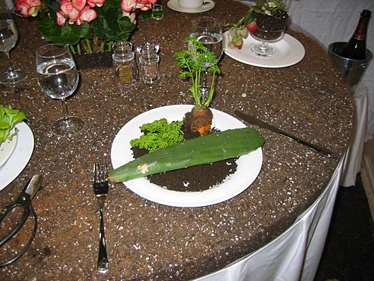

Photos from our second trip to Japan, 18 March–2 April 2005 are on Flickr
Japan, 18-28 April 2003
This is the first of 10 pages. You may wish to open the others in new windows to let them download in the background:
- Index
- Arrival, Day 1: Tsukiji Fish Market; Hama-Rikyu Gardens [1.66Mb]
- Day 1 (continued): DesignFesta [1.25Mb]
- Day 2: Meiji Shrine and inner garden; Harajuku; Nezu Institute; Aoyama cemetery [2.38Mb]
- Day 3: Ghibli Museum, Mitaka; Shinjuku [1.66Mb]
- Day 4: Hakone: Taisekan ryokan [1.81Mb]
- Day 5: Hakone: Taisekan; Hakone Museum of Art; ropeway to Owakudani; Lake Ashino-ko [1.93Mb]
- Day 6: Kamakura [4.37Mb]
- Day 7: Senso-ji temple; Asakusa; Joe [1.46Mb]
- Day 8: Koishikawa Korakuen garden; Seibu department store; Ginza [1.2Mb]
- Day 9: Shinjuku-gyoen gardens [2Mb]
- Day 9 (continued): Harajuku, Ueno Park and the Tokyo National Museum, Roppongi Hills [1.59Mb]
Saturday 20 April: DesignFesta
DesignFesta was very cool. [Kelly found the DesignFesta website by chance on the web before we left.] Doesn't seem possible anywhere else in the world. The way it draws thousands of teenagers, I've never seen a culture where drawing and making stuff is cool to such a degree, not merely a small, shy little niche. It's basically open to anybody who create art of any kind.
You see this creative zeal everywhere — in Tokyo Hands, the 7-story DIY store, on every floor there's a crowded workshop table where people assemble stuff under expert tutelage. When we were in Takuya Angel, an uber-cool design boutique in Harajuku where the wackiest outfits (tartan and fake fur and plastic seem to be trademarks) sell for astronomical prices — the shopkeeper girls were all sitting on the floor drawing in sketchbooks.
DesignFesta vol.17 2003
The poster in the foyer.
The cute, the weird and the very weird:
This stuff's absolutely bizarre. What all these faces have in common is that they all have a long rubbery gloop of snot hanging out from one nostril. It looks oddly beautiful (and I wondered whether it had anything to do with the manga convention of indicating sleeping by drawing a bubble from one nostril.) The pole the guy's clutching holds up an enormous head like the ones below. The photo didn't come out very well, but here's one of his postcards:

Equally bizarre. Ecorche minotaurs, teddy bears, and other imaginary creatures, beautifully made. (The minotaur is near life-size.)
Typical couple all in pink.
All in blue. Cloud-girl surrounded by photos of nothing but clouds, tapping away (like most of the stallholders) on her i-mode phone.
All in yellow. This guy is filling canvas upon canvas with tiny faces in spiral patterns with a pencil-thin brush.
All in green. "Le Restaurant du Sano." Incredibly intriguing, at-first-glance classical table arrangement: the table is a slab of soil. The chair is covered in moss. The hostess — Masakazu Sano — wears a cabbage apron. And the food is growing in the plates:
What can I say?
All colours. These are all cardboard-construction kits.
Dimunitive girl finger-painting these worried-looking cartoon faces
Obviously slightly twisted girl surrounded by brains, deformed faces, ...
...and cute little items like these. Mobile phone jewelry (that you hang from your phone — you don't see anybody whose phone doesn't jingle when it moves) are for sale everywhere. Those little things are little maggots with baby heads or brains attached.
More macabre. Those are all real, painstakingly-mounted skeletons, of snakes, rats, crows and lizards.
I think one of this guy's mobile copper sculptures was also in the Ghibli Museum. I wish I could confirm the hunch.
Guitar maker. The one in the case is made to look like Noritake blue glaze porcelain.
Some wonderful illustrators
Hard Pain: Fukaya Yuichiro

Art Nouveau Vaughn Bode-ish sexy illustration, with immaculate compositional and colour sense. Image from the website:

The website's hard to navigate, but here're some sample pics: 1, 2, 3, 4, 5, 6, 7, 8, 9, 10, 11, 12, 13, 14, 15, 16, 17, 18, 19
Foxy Works: Naoto Akiyama

Beautiful illustrations, stuffed toys and embroidery on the website. Go have a look.
Terry's Net
Wonderful, colourful, busy drawings with a somewhat European feel — website
Website gallery's easy to navigate, but here are some favourites: 1, 2, 3, 4, 5
[Name unknown]
Eerie images of what seems like mythical Japanese ghosts and monsters, a combining computer-treated phography backgrounds with clear-line foregrounds — website
Some sample images: 1, 2, 3, 4, 5, 6.
Unfortunately, on the website all the images have been subjected to a crude textural treatment which detracts greatly (The 1st four images above I bought as postcards.)
I regret not buying at least one of this guy's drawings. He's surrounded by little original watercolours, all Egon Schiele-ish portraits, all beautiful. Selling for just 700 Yen each (about £4).
Another artist. Not very imaginative, but the effortless technique (a bit like Paul Pope) is wonderful.
 Amazing, huge, pointillist paintings — this one's about 2x1 meters. By Natsuko Taniguchi, whom you can see here.
Amazing, huge, pointillist paintings — this one's about 2x1 meters. By Natsuko Taniguchi, whom you can see here.
Other sights
Wacky band, with female dancers and this guy miming with an saxophone-cum-speaker straight out of Cronenberg.
On the way back, via the new Yurikamome line that crosses the Rainbow Bridge to Tokyo. (Some guidebooks refer to it as a monorail, but it seemed to have two rails to me.) In the distance, the ferris wheel, and the tower of the Maritime Museum, from where we walked.
By the end of the day Kelly was in tears she was so tired. (And I was falling asleep on the train.) We blew one chance to get an interesting meal, and ate at Denny's, where I had "hamburger" — just the patty — in brown sauce.
Next: Day 2: Meiji Shrine, Harajuku, Aoyama
{kind=link}